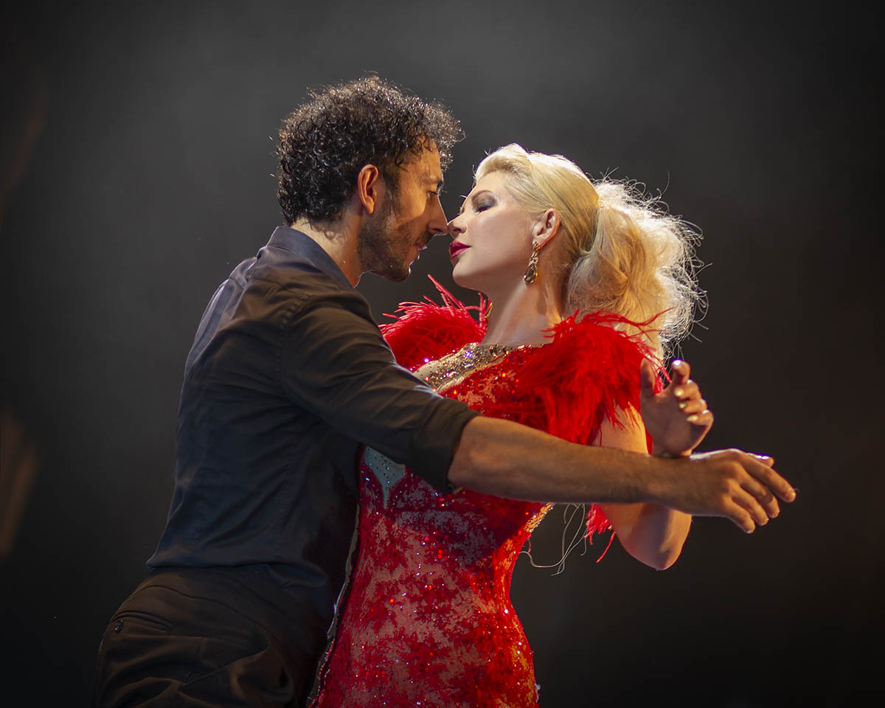
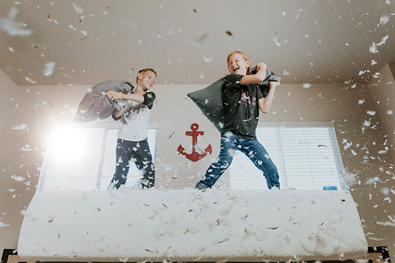
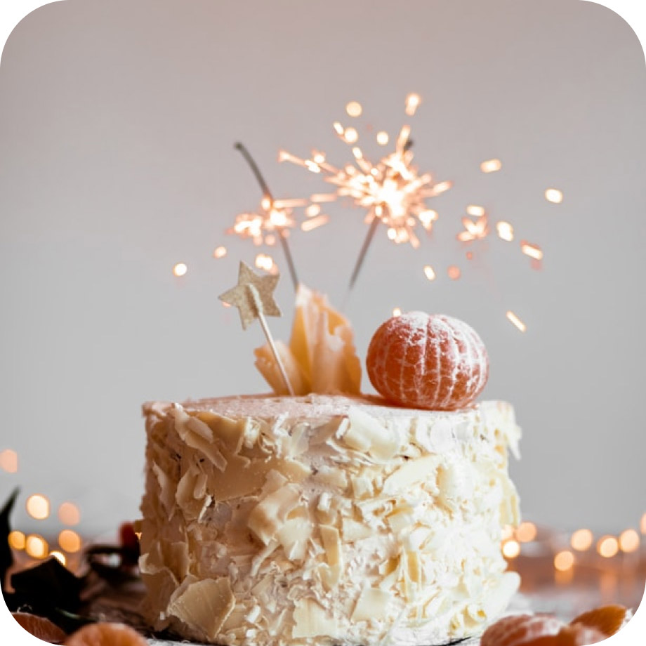
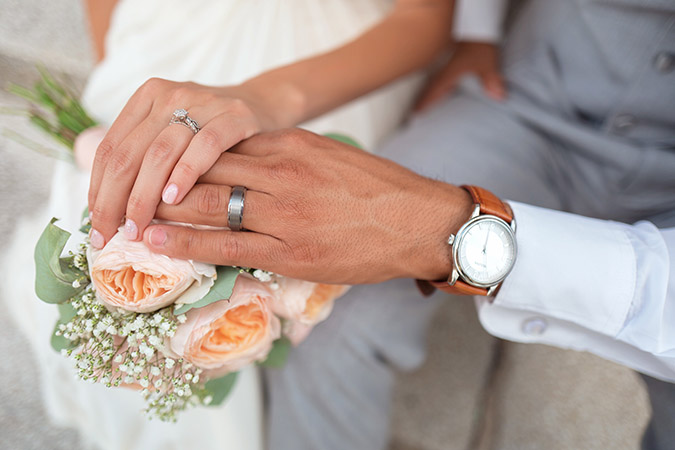
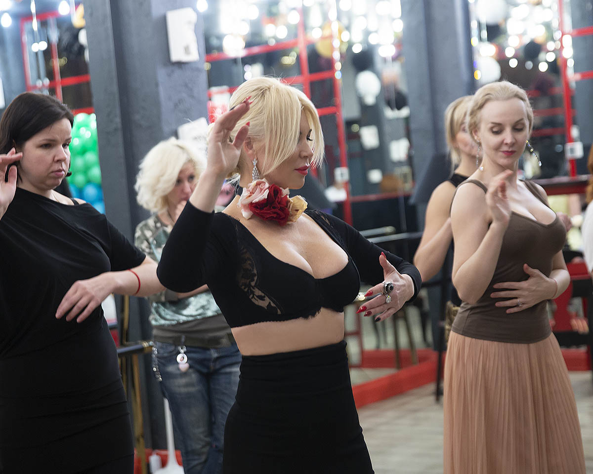
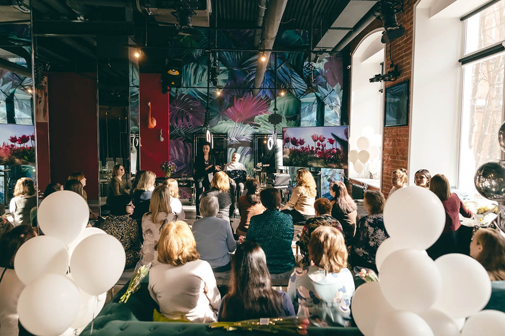
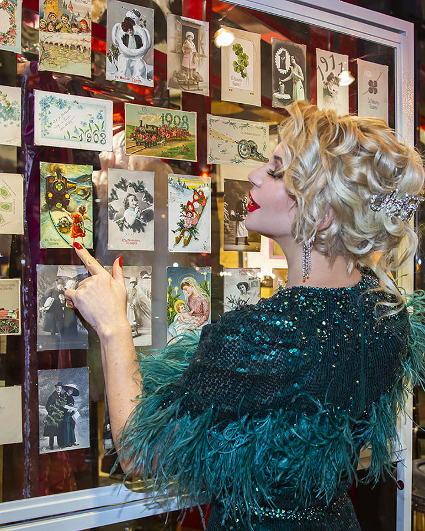

Премиум лофт в центре Москвы
Арендуйте стильный лофт с панорамными окнами для проведения мероприятия на самом высоком уровне!
Причины снять лофт
Предлагаем аренду лофта премиум-класса «Adornos» в центре Москвы, оформленного в современном стиле. Он позволит сделать любое мероприятие незабываемым при минимальных усилиях, ведь здесь учтены основные требования к комфортному времяпровождению. В лофте можно создать особенную атмосферу только для своих гостей, не подстраиваясь под чьи-то другие компании.
- Просторное помещение с высокими потолками и большими окнами
- Возможность декорировать зал для своих целей
- Наличие всего нужного оборудования
- Возможность привлечь дополнительные услуги и подрядчиков
- Отсутствие посторонних компаний
- Общее пространство 180 квадратных метров
- Историческое здание XIX века
- Охраняемый паркинг
- Приветливые менеджеры
- Панорамные окна
Лофт для любых событий
Сейчас стало модно снимать лофт для проведения различных мероприятий, так как он может с успехом заменить зал ресторана или кафе. Здесь можно провести торжество любого масштаба, ведь высокие потолки, большое пространство, правильное зонирование дадут возможность интересно и с комфортом провести время даже большому количеству гостей.
Закажите просторный лофт «Adornos» в аренду на мероприятие в необычном ключе. Ощутите пространство, свободу и креатив!
- Забронировать сейчас
Танцевальные мероприятия
Создайте праздничную атмосферу для танцевального мероприятия в зеркальном зале, будто раздвигающем границы пространства. В стильном лофте с панорамными окнами, дающими много света, удобно проводить фестивали, конкурсы, мастер-классы, милонги. Есть раздевалки, гримерка, уборная, световое и звуковое оборудование. Современная подсветка обеспечит достаточно света вечером, чтобы поддержать праздник танца и показать в выгодном ракурсе каждого участника. Зеркальные стены и TV-панели отразят все движения участников и позволят ощутить масштаб мероприятия.
- 
Детские праздники
Дети любят много двигаться, поэтому большое пространство лучше подойдет для детского праздника. Здесь дети смогут играть и веселиться, не боясь потревожить посторонних. Наполненный светом атмосферный лофт можно украсить в стилистике и цветовой гамме так, как захочется вашему ребенку. Для детей можно организовать кэнди-бар и фуршет, а для взрослых накрыть стол. Просторное помещение позволит провести развлекательную программу с подвижными конкурсами. Заказав лофт и услуги кейтеринга, можно отпраздновать день рождения ребенка или другое мероприятие без утомительной готовки и последующей уборки.

Фотосессии
Для красивого фото нужен стильный интерьер. Большой зал с зеркальными колоннами, панорамными окнами и современной подсветкой как нельзя лучше подойдет для фотосессий. У нас вы можете арендовать лофт в Москве с несколькими фотозонами для эффектных фотографий. Помещение подойдет для персональных, парных, семейных фотосессий, съемок Love story. В просторном зале с зеркалами можно сделать костюмированные снимки или воплотить оригинальные идеи и творческие задумки. В просторном зале, наполненном естественным светом, вы при минимальных затратах получите интересные и яркие фото.
- 
Дни рождения
Эффектное помещение для дня рождения позволит оригинально провести свой праздник в приятном кругу близких людей. Необычный интерьер, отличающийся от ресторана, большие окна и зеркальные стены станут идеальной площадкой для проведения запоминающегося торжества и подарят ощущение простора и свободы. Оформить пространство можно по вашему желанию в любой стилистике. А возможность использовать аудио и видеооборудование придаст дню рождения яркость и оригинальность. В стоимость аренды включены охрана и уборка зала после торжества. Можно принести еду с собой или заказать кейтеринговое обслуживание.
- 
Свадьбы
Проведение свадьбы в лофте очень выгодно: можно разместить зону регистрации, столы для гостей, фотозону, диджея с аппаратурой, бар, да еще останется место для проведения конкурсов и танцев. Зеркальные стены и колонны создадут эффект расширения пространства, а высокие потолки и большие окна — впечатление воздушности помещения. Это отличный вариант для проведения спонтанного или запланированного торжества. Арендуя лофт для свадьбы, вы сможете воплотить свои оригинальные, стильные и креативные идеи, которые запомнятся гостям и выделят ваш праздник из множества других свадебных торжеств.
- 
Тренинги
Арендуйте лофт «Adornos», чтобы создать раскрепощенную обстановку для сплочения коллектива на тренинге или тимбилдинге. Ведь известно, что место проведения напрямую влияет на эффективность этого мероприятия. Поэтому главная задача при его подготовке — организовать условия, чтобы люди почувствовали атмосферу свободы и открытости. Интерьер лофта можно разделить на несколько зон и провести тренинг в непринужденном формате, в дружеской и доверительной атмосфере. В помещении есть большие окна, качественное освещение и оборудование для демонстрации роликов и презентаций. Это обеспечит эффективный результат мероприятия.
- 
Корпоративы
Задайте свой формат праздника, сняв лофт для вечеринки с коллегами по работе. Корпоративы на Новый год, 8 марта, профессиональный или другой праздник удобнее проводить в отдельном помещении, чем в ресторане или кафе. Просторный зал позволяет не ограничивать приглашенных в перемещениях и активности. Здесь можно организовать застолье любого формата — от шведского стола до полноценного банкета. Отлично освещенный красивый зал с зеркальными стенами и колоннами станет превосходным фоном для интересных фото. А еще хватит места для танцев и конкурсов.
- 
Выставки
Прекрасно освещенное пространство лофта позволяет удобно разместить арт-объекты и обеспечить свободный подход посетителей к ним. Удобный лофт в центре Москвы даст возможность грамотно организовать выставки, презентации или другие арт-мероприятия. Благодаря естественному освещению через панорамные окна днем и современной подсветке вечером выставку можно проводить в любое время. А зеркальные стены помогут устроить обзор экспонатов без необходимости обходить вокруг них.
Занятия танцами
Предлагаем танцорам и педагогам аренду зала для танцев с необходимым световым и звуковым оборудованием для проведения уроков и репетиций. Зеркальная стена позволит оттачивать движения танго, вальса, стрит-дэнса или других танцев. А заниматься можно тогда, когда вам это удобно и столько, сколько нужно для достижения совершенства. Здесь можно проводить индивидуальные уроки, мастер-классы с несколькими или многими участниками. Комфортные условия понравятся новичкам и профессионалам танца.